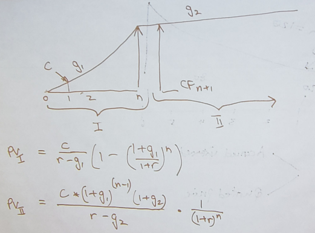

The Mathematics of Finance¶
Present Value vs Future Value¶
Future Value of Investement
- n = the number of compounding periods in between PV and FV
- PV = the present value of investment (capital)
- \(FV_{t=n}\) is the future value of an investment at the nth period
Hint
r and n should talk in terms of the same time frame
- e.g. if r is a per annum percentage, then n should be # years
- e.g. if r is a monthly rate, then n should be # months
Brandon’s Point of View Value Conversion Formula¶
Important
- \(V_{t=t_o} =\) Value of Investment at time \(t_o\)
- \(r =\) interest rate compounded at the same unit of time as \(t_o\)
- f = final time
- i = initial time
- c = number of times interest is compounded per unit of time
Note
Compared to other formula:
- \(n = c*(f-i)\)
- \(PV = V_{t=i}\)
- \(FV = V_{t=f}\)
- new formula encapsulates the idea of moving the point of view of different valuations
Alternate POV Conversion Formula
- multiply V by \(r^n, r = \text{interest rate}, n = \text{number of times r is compounded}\) if moving V forward, divide by it if moving V back
Nominal Interest Rates¶
nominal interest rate, an interest rate “as stated” without adjustment for the full effect of compounding
- is the effective interest rate compounded yearly
- an interest rate is called nominal if the frequency of compounding (e.g. a month) is not identical to the basic time unit in which the nominal rate is quoted (normally a year)
- e.g. “8% per year, compounded monthly” = nominal 8% per year compounded 12 times per year = \(j_{12} = 0.08\)
Naming of Nominal Interest Rates
Effective Interest Rates¶
Effective Interest Rate (EIR), the interest rate on a loan or financial product restated from the nominal interest rate as an interest rate with annual compound interest payable in arrears.
- It is used to compare the annual interest between loans with different compounding periods like week, month, year, etc.
Effective Annual Rate (EAR), the interest rate as if it were compounded yearly instead of its actual compounding period
Conversion Between Nominal And Effective Interest Rates¶
Important
- \(j_n =\) nominal interest rate (that’s expressed as an interest rate compounded yearly) for an effective interest rate componded n times yearly
- \(EIR_n\) effective interest rate compounded n times yearly
Note
The nominal interest rate is the same as the effective annual interest rate.
Naming of Effective Interest Rates
Annual Percentage Rate (APR), an interest rate that is expressed as an EAR for an interest rate compounded twice per year (in Canada), often used for expressing the interest rate on items like car financing, etc.
- \(APR = EIR_2\)
Example: Basic Effective Annual Rate¶
invest $100
each half year get 10%
then
after 1/2yr you will get $10 at t = 1 (year) $121
EIR_2 = effective half year rate = 10% EIR_1 = EAR = 21%
Conversion Between Effective Interest Rates¶
Important
- p = number of Y periods in an X period
Example: Basic Conversion¶
Example: Converting Between Rates¶
if
20% p.a. (per annum) compounded twice a year
APR - compounded twice per year in Canada
j_2 = 20%
J implies per year
2 implies compounded twice per year
Example: Converting To Effective Annual Rate¶
| n | \(EIR_n\) | \(EAR = EIR_{1}\) |
|---|---|---|
| 1 | 0.10 | 0.10 |
| 2 | 0.05 | 0.1025 |
| 4 | 0.025 | 0.1038 |
| 12 | 0.0083 | 0.1043 |
Inflation¶
Invest 100
nominal r 12%
Exp r_inf 8%
| t = | 0 | 1 |
|---|---|---|
| $/muffin | 1 | 1.08 |
| Cash | 100 | 112 |
| # muffins | 100 | 103.7 |
- \(\therefore\) real rate of return = r* = 3.7%
- muffins is an analogy for t=0 dollars = real dollars we have at t=1
Perpetuity¶
perpetuity, a constant, regular stream of cash flows continuing forever and starting in exactly one period
- constant -> same amount of cash flows every period
- regular -> periods are regular
Calculating the PV of perpetuity cash flows
Suppose C = cash flow every period after period t=1
Important
- C - cash flow at every period starting at period t=1
- r - effective interest rate compounded every period
- \(P_{t \geq 1} = \text{perpetuity starting with first cash flow at period t=1}\)
- \(V_{t \geq 0} = PV\)
Note
Example: Basic Perpetuity¶
r = 10%,
C = $1000 p.a, starting at t=1
Example 2: Displaced Perpetuity¶
r = 10%,
C = $1000 p.a, starting at t=0
Method 1: Component Addition¶
Method 2: POV Conversion¶
Example: Fractionally Displaced Perpetuity¶
r = 10%,
C = $1000 p.a, starting at t=0.5
Annuity¶
annuity, a constant, regular, finite cash flow stream starting in exactly one period
- difference between Annuity and Perpetuity is that the cash flow ends at some point
Important
- \(A_{1 \leq t \leq n} =\) an annuity that starts on period t=1 and ends at period t=n
- n = number of cash flow periods
Note
Example: Basic Annuity¶
r = 10%
Annual cash flows starting in 1 yr
n = 20
Example: Displaced Annuity¶
r = 10%
Annual cash flows starting today
Last cash flow in 20 years
Example: Displaced Annuity 2¶
What is the value today of a policy that pays $1000 a year.
20 cash flows.
1st cash flow in 5 year.
r = 10%
Steps¶
- Draw good timeline
- Idenfity cash flow stream
- Apply std formula
- this gives V exactly one period before first cash flow
- adjust as necessary
Geometric Growth¶
- e.g. “g by 10% per year”
Growth Perpetuity¶
C = 1st cash flow
Growth Annuity¶
Example: Retirement Savings Plan¶
r = 10%
Today birthday t=20
Deposit starting one year
last deposit on birthday t=65
first withdrawl birthday t=66
last withdrawl on t=85
withdrawl to grow at 3%
first withdrawl to be 100k
how much must you deposit each year?
Example: 2 Stage Growth¶
Net Present Value¶
- npv (net present value of a project) = present value of benefits (of project) - present value of costs (of project)
- look at cash flows
- take present value of all outflows = today’s equivalent value of the cost of the project
- take present value of all inflows = today’s equivalent value of all of the benefits of the project
- benefits > costs = good project! or if benefits - costs > 0 -> good project!
Example¶
The Internal Rate Of Return¶
internal rate of return, a way of answering “what is the return on this business investment”
- is the hypothetical opportunity cost rate of return that makes NPV equal zero
NPV Schedule
- NPV schedule, a plot of \(NPV = f(\text{interest rate})\)
- the IRR(s) for any given NPV schedule curve are given by when the curve hits the r = interest rate axis
intuition for IRR relative to other NPVs
if NPV > 0, the business investment is better for wealth creation than an equivalent financial investment with equal risk
if NPV < 0, the business investment is worse
if NPV = 0, the business investment is equal for wealth creation than an equivalent financial investment
- the business investment should have the same return as the financial investment
- the equivalent financial investment is considered as the next best opportunity, and thus lends itself to the opportunity cost rate of return